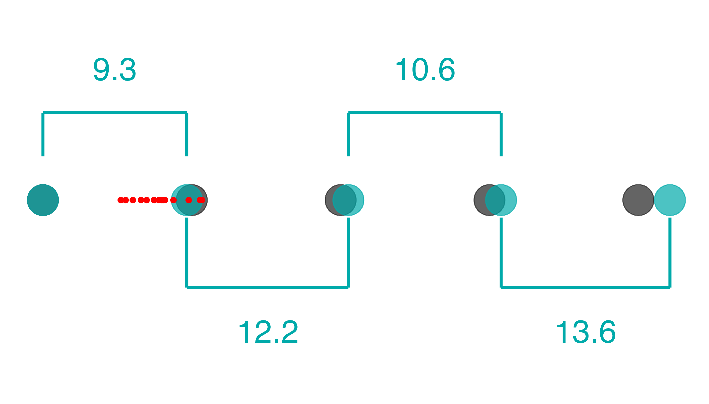
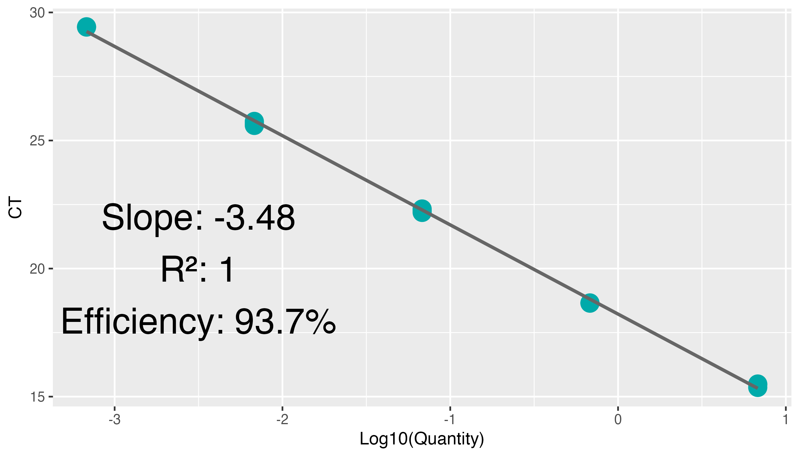
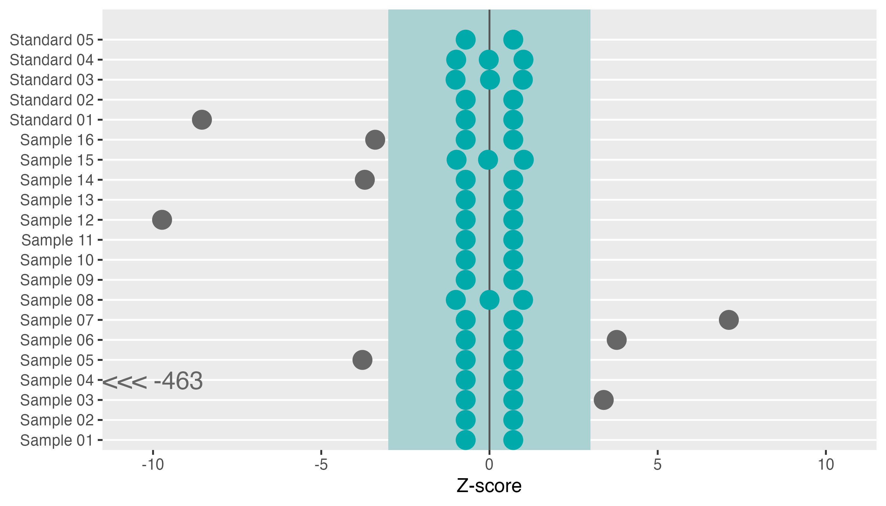
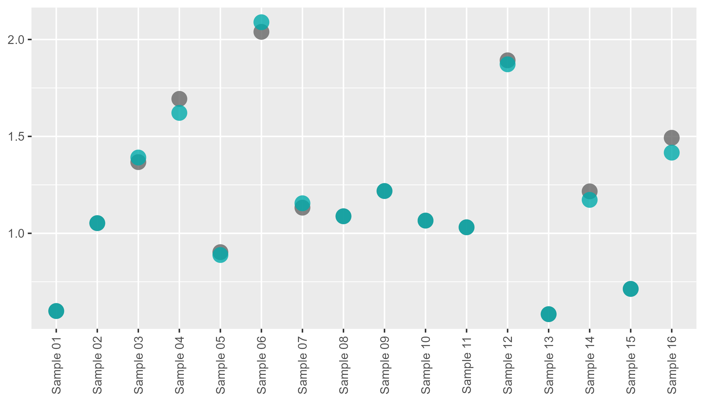

performing-lib-quant-qc.RmdWhen RNA libraries are generated, their absolute concentrations need to be established so they can be evenly loaded onto the chip with the correct concentration. In order to measure RNA library concentration, qPCR with a standard curve is performed. amplify offers several functions to both:
amplify takes ‘results’ (.xls(x)) files exported from QuantStudio. They can be tidied easily by providing a path to pcr_tidy. We also add pad_zero = TRUE, which changes the default value of, say Sample 1 to Sample 01. This will help with out plotting order down the line.
tidy_lib <- system.file("extdata", "untidy-standard-curve.xlsx", package = "amplify") |>
pcr_tidy(pad_zero = TRUE)
tidy_lib |>
select(1:10) |>
head()
#> # A tibble: 6 × 10
#> well well_position omit sample_name target_name task reporter quencher
#> <chr> <chr> <lgl> <chr> <chr> <chr> <chr> <chr>
#> 1 1 A1 FALSE Standard 01 Target 1 STANDARD FAM NFQ-MGB
#> 2 2 A2 FALSE Standard 01 Target 1 STANDARD FAM NFQ-MGB
#> 3 3 A3 FALSE Standard 01 Target 1 STANDARD FAM NFQ-MGB
#> 4 5 A5 FALSE Sample 01 Target 1 UNKNOWN FAM NFQ-MGB
#> 5 6 A6 FALSE Sample 01 Target 1 UNKNOWN FAM NFQ-MGB
#> 6 8 A8 FALSE Sample 09 Target 1 UNKNOWN FAM NFQ-MGB
#> # … with 2 more variables: ct <dbl>, ct_mean <dbl>By default, pcr_tidy assumes you have a standards serial dilution starting at 6.8, diluted by a factor of 10, going all the way down to 0.00068, and that you want all of them. There are a couple instances in which this might not be the case:
In that instance, you would supply a numeric vector to the usr_standards argument. If you wish to omit a given set of standards, simply do not include them in this vector:
system.file("extdata", "untidy-standard-curve.xlsx", package = "amplify") |>
pcr_tidy(pad_zero = TRUE, usr_standards = c(6.8, .68, .068, .0068)) |>
select(1:10) |>
head()
#> 2 rows of standards did not have a matching value in 'standards' and have been dropped
#> # A tibble: 6 × 10
#> well well_position omit sample_name target_name task reporter quencher
#> <chr> <chr> <lgl> <chr> <chr> <chr> <chr> <chr>
#> 1 1 A1 FALSE Standard 01 Target 1 STANDARD FAM NFQ-MGB
#> 2 2 A2 FALSE Standard 01 Target 1 STANDARD FAM NFQ-MGB
#> 3 3 A3 FALSE Standard 01 Target 1 STANDARD FAM NFQ-MGB
#> 4 5 A5 FALSE Sample 01 Target 1 UNKNOWN FAM NFQ-MGB
#> 5 6 A6 FALSE Sample 01 Target 1 UNKNOWN FAM NFQ-MGB
#> 6 8 A8 FALSE Sample 09 Target 1 UNKNOWN FAM NFQ-MGB
#> # … with 2 more variables: ct <dbl>, ct_mean <dbl>This will automatically update the slope column of the dataframe as well. This can be called standalone (say, after manually removing a few standards replicates from your dataset) by running pcr_calc_slope:
recalc <- tidy_lib |>
filter(quantity > 0.0068 | task != "STANDARD") |>
pcr_calc_slope()
recalc$slope[1]
#> [1] -3.430141
tidy_lib$slope[1]
#> [1] -3.4827Before we can perform quality control, we first need to calculate the concentration of RNA library in our samples. We supply a dilution factor to calculate the concentration of the original libraries from the concentration of libraries in the assay (here we diluted them 1:1000).
lib_conc <- tidy_lib |>
pcr_lib_calc(dil_factor = 1000)
lib_conc |>
select(sample_name, concentration)
#> Adding missing grouping variables: `task`
#> # A tibble: 58 × 3
#> # Groups: task [3]
#> task sample_name concentration
#> <chr> <chr> <dbl>
#> 1 STANDARD Standard 01 NA
#> 2 STANDARD Standard 01 NA
#> 3 STANDARD Standard 01 NA
#> 4 UNKNOWN Sample 06 2039.
#> 5 UNKNOWN Sample 06 2039.
#> 6 UNKNOWN Sample 06 2039.
#> 7 UNKNOWN Sample 12 1893.
#> 8 UNKNOWN Sample 12 1893.
#> 9 UNKNOWN Sample 12 1893.
#> 10 UNKNOWN Sample 04 1694.
#> # … with 48 more rowsQuality control metrics also need to be calculated. We can do this by calling pcr_lib_qc on data output from pcr_lib_calc:
lib_qc <- lib_conc |>
pcr_lib_qc()
lib_qc
#> $standards
#> # A tibble: 13 × 19
#> # Groups: sample_name [5]
#> sample_name task quantity_mean concentration quantity quant_actual dil
#> <chr> <chr> <dbl> <dbl> <dbl> <dbl> <dbl>
#> 1 Standard 01 STANDARD NA NA 6.80 6.80 0
#> 2 Standard 01 STANDARD NA NA 6.80 6.80 0
#> 3 Standard 01 STANDARD NA NA 6.80 6.80 0
#> 4 Standard 02 STANDARD NA NA 0.680 0.734 9.27
#> 5 Standard 02 STANDARD NA NA 0.680 0.734 9.27
#> 6 Standard 03 STANDARD NA NA 0.0680 0.0603 12.2
#> 7 Standard 03 STANDARD NA NA 0.0680 0.0603 12.2
#> 8 Standard 03 STANDARD NA NA 0.0680 0.0603 12.2
#> 9 Standard 04 STANDARD NA NA 0.00680 0.00568 10.6
#> 10 Standard 04 STANDARD NA NA 0.00680 0.00568 10.6
#> 11 Standard 04 STANDARD NA NA 0.00680 0.00568 10.6
#> 12 Standard 05 STANDARD NA NA 0.000680 0.000417 13.6
#> 13 Standard 05 STANDARD NA NA 0.000680 0.000417 13.6
#> # … with 12 more variables: slope <dbl>, efficiency <dbl>, r2 <dbl>, ct <dbl>,
#> # no_po_mean <dbl>, no_po_sd <dbl>, keep <lgl>, keep_temp <lgl>,
#> # mean_adj <dbl>, sd_adj <dbl>, quant_adj <dbl>, z <dbl>
#>
#> $samples
#> # A tibble: 42 × 19
#> # Groups: sample_name [16]
#> sample_name task quantity_mean concentration quantity quant_actual dil
#> <chr> <chr> <dbl> <dbl> <dbl> <dbl> <dbl>
#> 1 Sample 06 UNKNOWN 2.04 2039. 2.06 2.06 NA
#> 2 Sample 06 UNKNOWN 2.04 2039. 2.12 2.12 NA
#> 3 Sample 06 UNKNOWN 2.04 2039. 1.94 1.94 NA
#> 4 Sample 12 UNKNOWN 1.89 1893. 1.93 1.93 NA
#> 5 Sample 12 UNKNOWN 1.89 1893. 1.88 1.88 NA
#> 6 Sample 12 UNKNOWN 1.89 1893. 1.87 1.87 NA
#> 7 Sample 04 UNKNOWN 1.69 1694. 1.62 1.62 NA
#> 8 Sample 04 UNKNOWN 1.69 1694. 1.84 1.84 NA
#> 9 Sample 04 UNKNOWN 1.69 1694. 1.62 1.62 NA
#> 10 Sample 16 UNKNOWN 1.49 1493. 1.46 1.46 NA
#> # … with 32 more rows, and 12 more variables: slope <dbl>, efficiency <dbl>,
#> # r2 <dbl>, ct <dbl>, no_po_mean <dbl>, no_po_sd <dbl>, keep <lgl>,
#> # keep_temp <lgl>, mean_adj <dbl>, sd_adj <dbl>, quant_adj <dbl>, z <dbl>
#>
#> $sample_summary
#> # A tibble: 16 × 3
#> sample_name quantity_mean quant_adj
#> <chr> <dbl> <dbl>
#> 1 Sample 01 0.599 0.599
#> 2 Sample 02 1.05 1.05
#> 3 Sample 03 1.37 1.39
#> 4 Sample 04 1.69 1.62
#> 5 Sample 05 0.903 0.888
#> 6 Sample 06 2.04 2.09
#> 7 Sample 07 1.13 1.15
#> 8 Sample 08 1.09 1.09
#> 9 Sample 09 1.22 1.22
#> 10 Sample 10 1.07 1.07
#> 11 Sample 11 1.03 1.03
#> 12 Sample 12 1.89 1.87
#> 13 Sample 13 0.583 0.583
#> 14 Sample 14 1.22 1.17
#> 15 Sample 15 0.713 0.713
#> 16 Sample 16 1.49 1.42
#>
#> $standard_summary
#> # A tibble: 5 × 4
#> sample_name dil quantity_mean quant_actual
#> <chr> <dbl> <dbl> <dbl>
#> 1 Standard 01 0 6.80 6.80
#> 2 Standard 02 9.27 0.680 0.734
#> 3 Standard 03 12.2 0.0680 0.0603
#> 4 Standard 04 10.6 0.00680 0.00568
#> 5 Standard 05 13.6 0.000680 0.000417
#>
#> $outliers
#> # A tibble: 58 × 19
#> # Groups: sample_name [22]
#> sample_name task quantity_mean concentration quantity quant_actual dil
#> <chr> <chr> <dbl> <dbl> <dbl> <dbl> <dbl>
#> 1 Standard 01 STANDARD NA NA 6.80 6.80 0
#> 2 Standard 01 STANDARD NA NA 6.80 6.80 0
#> 3 Standard 01 STANDARD NA NA 6.80 6.80 0
#> 4 Sample 06 UNKNOWN 2.04 2039. 2.06 2.06 NA
#> 5 Sample 06 UNKNOWN 2.04 2039. 2.12 2.12 NA
#> 6 Sample 06 UNKNOWN 2.04 2039. 1.94 1.94 NA
#> 7 Sample 12 UNKNOWN 1.89 1893. 1.93 1.93 NA
#> 8 Sample 12 UNKNOWN 1.89 1893. 1.88 1.88 NA
#> 9 Sample 12 UNKNOWN 1.89 1893. 1.87 1.87 NA
#> 10 Sample 04 UNKNOWN 1.69 1694. 1.62 1.62 NA
#> # … with 48 more rows, and 12 more variables: slope <dbl>, efficiency <dbl>,
#> # r2 <dbl>, ct <dbl>, no_po_mean <dbl>, no_po_sd <dbl>, keep <lgl>,
#> # keep_temp <lgl>, mean_adj <dbl>, sd_adj <dbl>, quant_adj <dbl>, z <dbl>This output is generally not useful by itself. Using pcr_lib_qc_plot_* functions on it, however, generates plots that display valuable visual QC summaries
Making standard curve for libraries requires making a serial dilution of standards. It is important we determine that this serial dilution was diluted properly, or the results calculated from it will be unreliable. The standard dilution plot helps with this:
lib_qc |>
pcr_lib_qc_plot_dil()
From this plot, we can see the relative dilution factors between samples. From this example, we can see a 9.3x dilution between the first and second, 12.2x dilution between second and third, etc. They gray dots represent where our blue dots should land if all the dilutions are perfect AND if efficiency is 100%. The red dots represent where the samples lie.
This plot can catch three sources of issues:
Determining efficiency issues vs consistently under-pipetting is impossible to determine with the data alone. Ensure you have calibrated pipettes and are practicing proper pipetting techniques to ensure not only consistent, but accurate volumes.
lib_qc |>
pcr_lib_qc_plot_slope()
In this plot, the log10 of the theoretical values of the standards is plotted against the Ct values of the standards. In a perfect world, we would expect that a standard 1/10th of the concentration would reach the same level of amplification in around 3.3 cycles. Why? Because in a perfect world, we expect perfect doubling of the product. \(2^{3.3}\approx 10\).
Thus, in a perfect world we expect to see a slope of -3.3, an \(R^2\) of 1, and an efficiency of 100%.
Things are rarely perfect, however. 100% efficiency is an upper bound. Therefore, an efficiency >80% is considered acceptable.
If there is an outlier in your standards it may make the efficiency artificially low or high. In some cases you can remove those standards and recalculate the slope to still get accurate concentrations, without having to redo the qPCR run:
One instances in which it is not recommended to simply remove the outliers: when standards that are within the range or above your sample concentrations. This is because a poor dilution done upstream of your samples will affect all concentrations downstream, making accurate determination of absolute library concentration impossible. If you are ever in doubt, you should probably bite the bullet and redo the qPCR.
lib_qc |>
pcr_lib_qc_plot_outliers()
#> Warning: Removed 54 rows containing missing values (geom_text).
#> Warning: Removed 1 rows containing missing values (geom_point).
It’s often best to remove technical replicate outliers in order to obtain an accurate estimate of concentration. A point is deemed an outlier if it is >3Z away from the mean of the other two. Shown above, the outliers are in gray, and the zone of inclusion is in blue. Particularly egregious outliers are shown with (<<<) or (>>>) and the number of standard deviations away they are. In the instance above, 463Z away! New estimates, sans these outliers, are found in the quant_adj column of sample_summary:
lib_qc$sample_summary
#> # A tibble: 16 × 3
#> sample_name quantity_mean quant_adj
#> <chr> <dbl> <dbl>
#> 1 Sample 01 0.599 0.599
#> 2 Sample 02 1.05 1.05
#> 3 Sample 03 1.37 1.39
#> 4 Sample 04 1.69 1.62
#> 5 Sample 05 0.903 0.888
#> 6 Sample 06 2.04 2.09
#> 7 Sample 07 1.13 1.15
#> 8 Sample 08 1.09 1.09
#> 9 Sample 09 1.22 1.22
#> 10 Sample 10 1.07 1.07
#> 11 Sample 11 1.03 1.03
#> 12 Sample 12 1.89 1.87
#> 13 Sample 13 0.583 0.583
#> 14 Sample 14 1.22 1.17
#> 15 Sample 15 0.713 0.713
#> 16 Sample 16 1.49 1.42These can be visualized using pcr_lib_qc_conc:
lib_qc |>
pcr_lib_qc_plot_conc() This plot shows the unadjusted concentrations in gray, and the concentrations after outlier removal in blue.
A full HTML report can be produced by running pcr_lib_qc_report:
lib_qc |>
amplify::pcr_lib_qc_report("path/to/file.html")